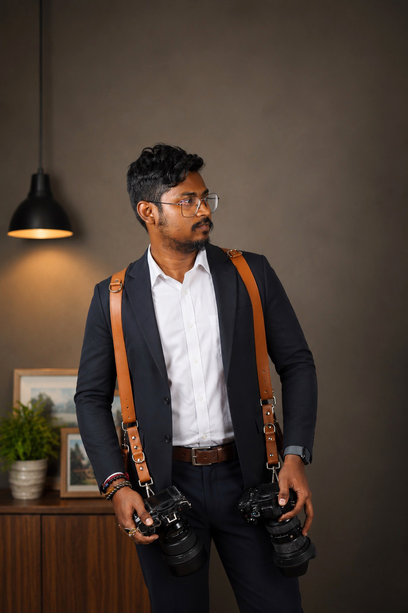

The moments you live today become the memories you treasure tomorrow. We're here to preserve them forever.
View the full portfolio
Since 2015 — Aperture & Co.
At VK Photography, we believe every moment has a story worth preserving. Through our lens, we capture genuine emotions, natural expressions, and unforgettable memories with creativity and passion. From weddings and portraits to special celebrations, our goal is to create timeless photographs that you'll cherish for a lifetime.
What We Do
One-on-one sessions capturing genuine personality and connection, on location or in-studio.
Full-day coverage that captures every unscripted moment, from getting ready to the last dance.
Clean, high-impact imagery for brands, e-commerce listings, and marketing campaigns.
A photographer on call throughout the year, building a consistent visual archive for your business.
Limited-run archival prints of select images, hand-numbered and shipped ready to frame.
Editorial and commercial licensing of our archive for outlets, brands, and publications.
Testimonials
 moments thatlast a lifetime
moments thatlast a lifetimeReal stories from clients who trusted us with their biggest days